Birds on Bikes III
A third collection of 20 birds and their favorite bicycles. All artwork created with Claude Code using ✨ Claude Opus 4.7 ✨.
Generate 20 SVGs of various waterfowl riding various bicycles.
For each SVG:
- Choose a type of bird, and a specific style of bicycle.
- Create an SVG illustrating the bird on the bicycle.
- save using filename: fowl-{i}.svg
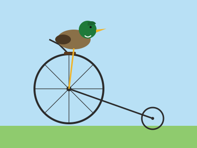
Mallard · Penny-Farthing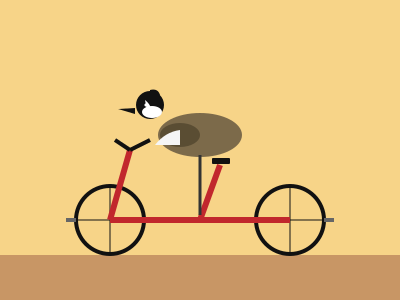
Canada Goose · BMX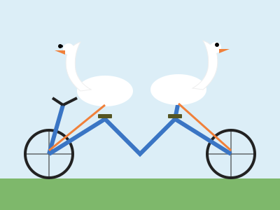
Mute Swan · Tandem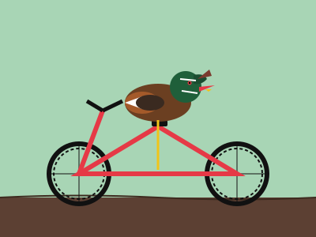
Wood Duck · Mountain Bike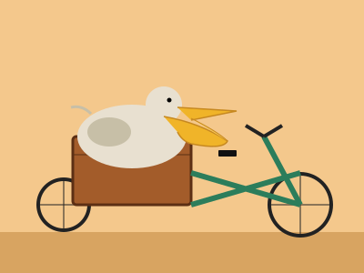
Pelican · Cargo Bike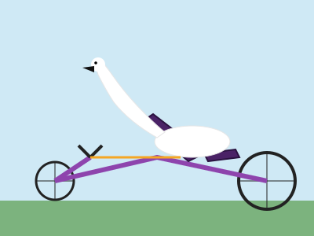
Trumpeter Swan · Recumbent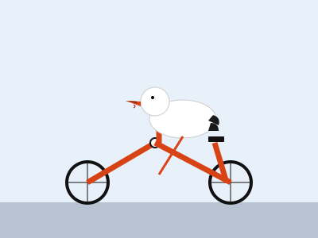
Snow Goose · Folding Bike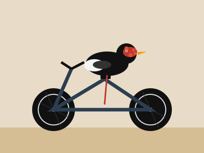
Muscovy Duck · Fat Tire Bike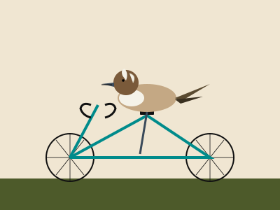
Northern Pintail · Road Bike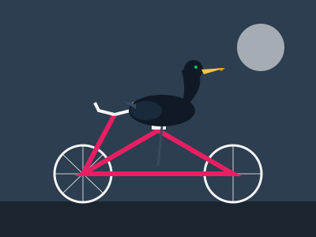
Cormorant · Fixed-Gear (Fixie)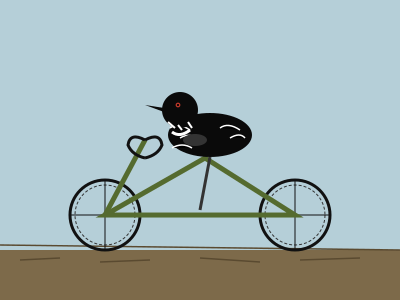
Common Loon · Cyclocross Bike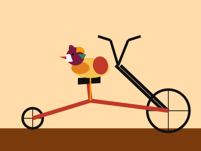
Mandarin Duck · Chopper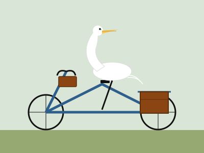
Great Egret · Touring Bike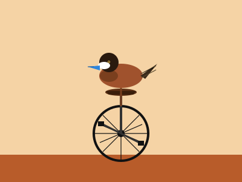
Ruddy Duck · Unicycle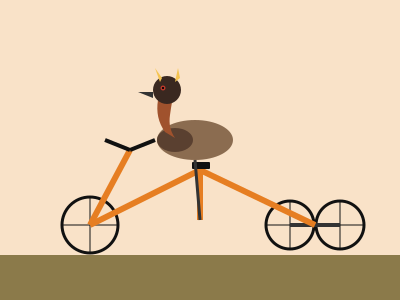
Grebe · Tricycle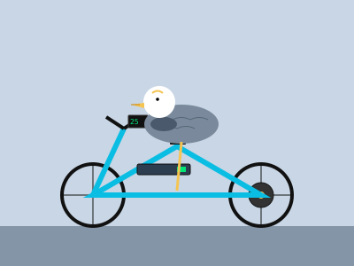
Emperor Goose · Electric Bike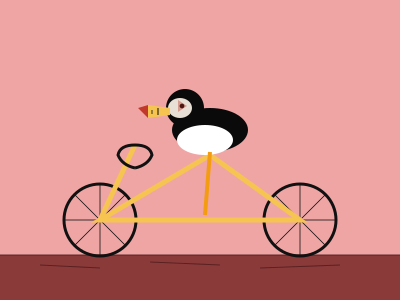
Atlantic Puffin · Track Bike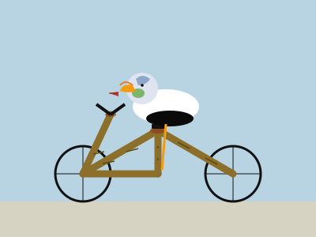
King Eider · Bamboo Bike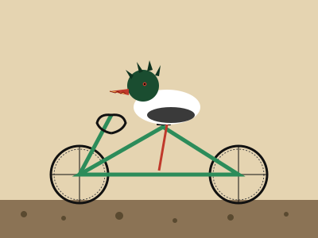
Common Merganser · Gravel Bike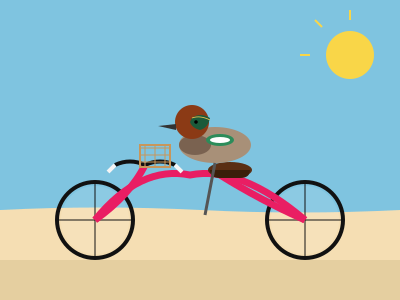
Green-winged Teal · Beach Cruiser